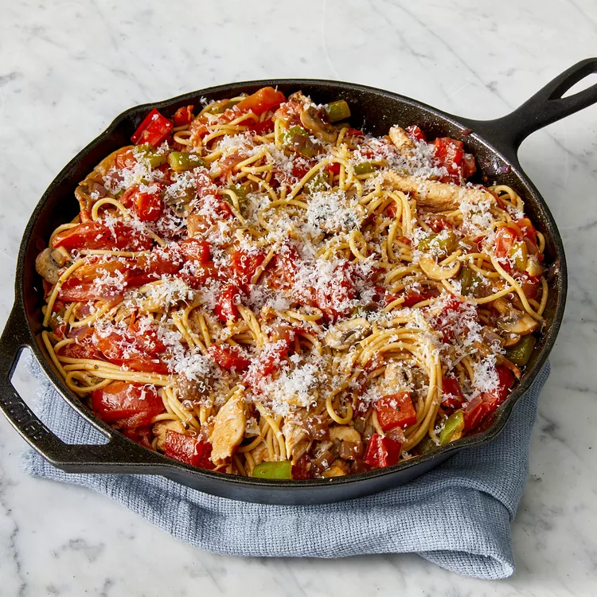

HOME
Skillet Chicken Pasta

Descrição
Skillet Chicken Pasta é um prato fácil com frango, macarrão e molho cremoso, tudo feito em uma única panela.
Ingredientes
- ½ pacote (8 onças) de espaguete
- 5 colheres de sopa de azeite, divididas
- 8 tomates roma (ameixa), cortados ao meio e fatiados
- 1 colher de chá de alho em pó
- ½ colher de chá de orégano seco
- 2 colheres de chá de manjericão seco
- 1 pitada de sal
- 1 colher de chá de pimenta-do-reino moída
- 1 ½ colher de chá de açúcar branco
- 1 colher de sopa de ketchup
- 2 peitos de frango sem pele e sem osso, cortados em tiras finas
- 2 dentes de alho amassados
- 1 pimentão verde picado
- 1 pimentão vermelho picado
- 1 cebola roxa picada
- 1 xícara de cogumelos frescos fatiados
- ¼ xícara de queijo parmesão ralado
passos
- Leve uma panela grande com água para ferver em fogo alto. Misture o espaguete e deixe ferver novamente. Cozinhe o macarrão até que esteja cozido, mas ainda firme ao morder, de 6 a 8 minutos. Escorra bem e mantenha aquecido.
- Aqueça 2 colheres de sopa de óleo em uma frigideira grande em fogo médio. Misture os tomates; cozinhe até que eles amoleçam e comecem a se desmanchar. Misture o alho em pó, o orégano, o manjericão, o sal, a pimenta, o açúcar e o ketchup. Aqueça o molho e reserve.
- Aqueça as 3 colheres de sopa de óleo restantes em uma frigideira de ferro fundido separada em fogo médio. Misture o frango; cozinhe até dourar. Misture os dentes de alho; cozinhe por mais 1 minuto.
- Retire o frango da frigideira e reserve. Aumente o fogo para alto. Misture os pimentões, a cebola e os cogumelos na frigideira e cozinhe até que comecem a amolecer. Misture o frango dourado. Aumente o fogo para médio e cozinhe até que o frango não esteja mais rosado no centro e os vegetais estejam cozidos, cerca de 5 minutos.
- Misture o frango e os vegetais com molho de tomate e macarrão quente. Sirva polvilhado com queijo parmesão.